Cartas
System Cards
Recuperación
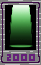Video (Activa los subtítulos)
| ¿Qué hace? | ¿Cuanto Cuesta? |
|---|---|
| Una system card para recuperar la salud perdida. | 2000 |
- Nivel 1: Cura 250 puntos de vida.
- Nivel 2: Cura 260 puntos de vida.
En Pasivo: Regenera vida lentamente mientras luchas. - Nivel 3: Cura 270 puntos de vida.
En Pasivo: Regenera el doble de vida mientras luchas. - Nivel 4: Cura 280 puntos de vida.
En Pasivo: Regenera el triple de vida mientras luchas.
Nuevo Álbum de Cartas
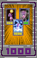| ¿Qué hace? | ¿Cuanto Cuesta? |
|---|---|
| Reinicia tú deck y obten un nuevo deck de cinco cartas. La reducción de costos no se aplica cuando usas tu carta de system card. |
1000 |
- Nivel 1: Reinicia tú Deck.
- Nivel 2: Reinicia tú Deck.
En Pasivo: Usar las cartas cuesta un 10% menos de energía. - Nivel 3: Reinicia tú Deck.
En Pasivo: Usar las cartas cuesta un 20% menos de energía. - Nivel 4: Reinicia tú Deck.
En Pasivo: Usar las cartas cuesta un 30% menos de energía.
Potenciador Danmaku
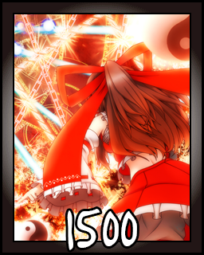| ¿Qué hace? | ¿Cuanto Cuesta? |
|---|---|
| Una system card que recarga tu barra de Danmaku convirtiendo el poder. Cuando se usa, su barra permanece al máximo durante 8 segundos y no puede ganar energía mientras dura este efecto, más tres segundos adicionales después de que finaliza. |
1500 |
- Nivel 1: La barra permanece al máximo durante 8 segundos.
- Nivel 2: La barra permanece al máximo durante 9 segundos.
En Pasivo: Tu barra se carga un poco más rápido mientras luchas. - Nivel 3: La barra permanece al máximo durante 10 segundos.
En Pasivo: Tu barra se carga más rápido mientras luchas. - Nivel 4: La barra permanece al máximo durante 11 segundos.
En Pasivo: Tu barra se carga aún más rápido mientras luchas.
Skill Cards
Día de las Llamas
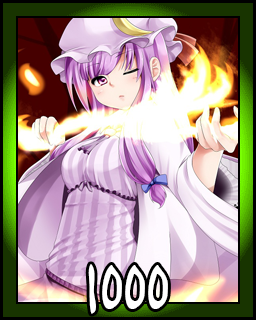| ¿Qué hace? |
|---|
| Aumenta tus niveles de poder del fuego. |
| ¿En Qué Afecta? |
|---|
| Fireball |
| Summer Flame |
| Summer Red |
| Flame Dance |
- Fireball: Más proyectiles.
- Summer Flame: Más Daño
- Summer Red: Más Daño
- Flame Dance: Más Daño
- Todos los niveles: Aumenta el poder de las habilidades enumeradas.
Día de las Ráfagas
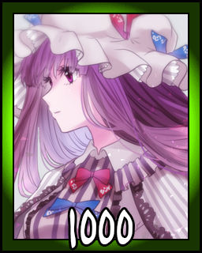| ¿Qué hace? |
|---|
| Aumenta tus niveles de poder del viento. |
| ¿En Qué Afecta? |
|---|
| Compressed Wind |
| Spring Wind |
| Wind Attack |
| Twister |
- Compressed Wind: Más proyectiles.
- Spring Wind: Ganas más poder.
- Wind Attack: Más Daño
- Twister: Más Daño
- Todos los niveles: Aumenta el poder de las habilidades enumeradas.
Día de las Olas
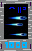| ¿Qué hace? |
|---|
| Aumenta tus niveles de poder del agua. |
| ¿En Qué Afecta? |
|---|
| Watergun |
| Bubble of Hesitation |
| Winter Element |
| Holding Spray |
- Watergun: Más Daño
- Bubble of Hesitation: Más durabilidad y daños.
- Winter Element: Más daño y múltiples pilares.
- Holding Spray: Más Daño
- Todos los niveles: Aumenta el poder de las habilidades enumeradas.
Día de los Cristales
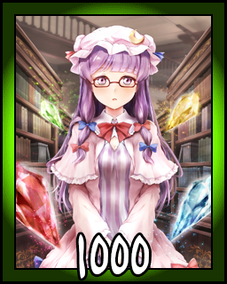| ¿Qué hace? |
|---|
| Aumenta tus niveles de poder del cristal. |
| ¿En Qué Afecta? |
|---|
| Autumn Blade |
| Crystal Pierce |
| Emerald City |
| Dew Spear |
- Autumn Blade: Más Daño
- Crystal Pierce: Genera cristales más rápido.
- Emerald City: Más Daño
- Dew Spear: Más cristales.
- Todos los niveles: Aumenta el poder de las habilidades enumeradas.
Spell Cards
Señal de Metal Ardiente "Saint Elmo's Pillar"
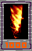| ¿Qué hace? | ¿Cuanto Cuesta? |
|---|---|
| Una spell card ofensiva que dispara una gran bola de fuego directamente al oponente y provoca una gran explosión de llamas. Se puede encadenar en: Royal Flare. Elemento: Fuego |
1000 |
- Elemento: Fuego
- Nivel 1: 60 de daño, 10 de daño protegido.
- Nivel 2: 70 de daño, 15 de daño protegido, olas de llamas desde el lado de la explosión.
- Nivel 3: 80 daños, 20 daños protegidos, 2 ondas de llamas desde el lado de la explosión.
- Nivel 4: 90 daños, 25 daños protegidos, 3 ondas de llamas desde el lado de la explosión.
Señal Solar "Royal Flare"
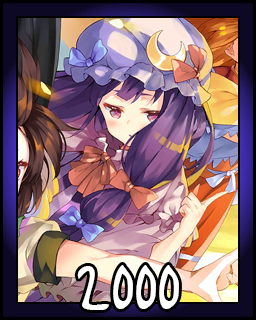| ¿Qué hace? | ¿Cuanto Cuesta? |
|---|---|
| Un ataque elemental solar que quema todo en un área grande. Utiliza toda tu barra de Danmaku y causa daño adicional según la cantidad que tengas. Se puede encadenar en: Solar Flare. Elemento: Fuego / Solar |
2000 |
- Elemento: Fuego
- Nivel 1: Daño Normal.
- Nivel 2: Daño Aumentado
- Nivel 3: Daño Aún Mayor
- Nivel 4: Daño Extremadamente Alto
Señal Metálica de Madera "Elemental Harvester"
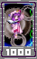| ¿Qué hace? | ¿Cuanto Cuesta? |
|---|---|
| Conéctate a una rueda dentada con cuchillas de metal afiladas para dañar a los oponentes cercanos. Esta spell card se puede usar para contrarrestar ataques normales, ataques especiales, hiperataques, lanzamientos normales y lanzamientos especiales del oponente. Se puede encadenar en: Emerald Megalopolis, el encadenamiento reduce la carga.. Elemento: Metal |
1000 |
- Elemento: Metal
- Nivel 1: Daño Más Bajo
- Nivel 2: Mas Daño
- Nivel 3: Aún Más Daño
- Nivel 4: La Mayoría de los Daños
Señal Elemental "Philosopher's Stone"
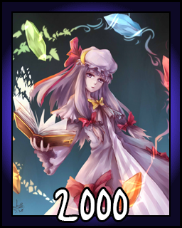| ¿Qué hace? | ¿Cuanto Cuesta? |
|---|---|
| Invoca los cinco cristales que representan los cinco elementos de Fuego, Agua, Viento, Tierra y Metal. | 2000 |
| Cuando se usan ataques elementales, los cristales correspondientes disparan proyectiles dirigidos al oponente y producen el siguiente efecto: | |
| Fuego: El cristal explota y hace daño en un área pequeña a su alrededor. | |
| Agua: El cristal libera dos burbujas de agua. | |
| Tierra: El cristal cura Patchouli por 25 vidas. | |
| Viento: El cristal genera 200 de poder. | |
| Metal: El cristal rellena el 40% de la barra de danmaku. | |
- Elementos: Todos
- Nivel 1: 15 segundos de duración. Cada Cristal se puede usar hasta dos veces.
- Nivel 2: 17 segundos de duración. Cada Cristal se puede usar hasta 3 veces.
- Nivel 3: 19 segundos de duración. Cada Cristal se puede usar hasta 4 veces.
- Nivel 4: 21 segundos de duración. Cada Cristal se puede usar hasta 5 veces.
Señal Agua Terrenal "Noachian Deluge"
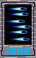| ¿Qué hace? | ¿Cuanto Cuesta? |
|---|---|
| Dispara bolas de agua a alta velocidad al oponente. El daño de las bolas es bajo, pero la cantidad de ellas y su rápida velocidad lo compensan. |
1000 |
- Elemento: Agua
- Nivel 1: 18 de daño/golpe.
- Nivel 2: 20 de daño/golpe. Pasivo: Aparecen burbujas de agua al azar en el escenario que dañan al oponente cuando se tocan.
- Nivel 3: 22 de daño/golpe. Pasivo: Aparecen burbujas de agua al azar en el escenario que dañan al oponente cuando se tocan. Cuando tocan el suelo, el agua contenida se rocía hacia arriba con el mismo efecto que el movimiento Winter Element.
- Nivel 4: 24 de daño/golpe. Pasivo: Igual que el anterior.
Señal Lunar "Silent Selene"
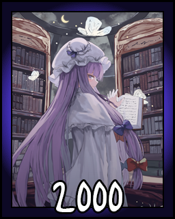| ¿Qué hace? | ¿Cuanto Cuesta? |
|---|---|
| Libera una gran cantidad de energía elemental de la Luna a tu alrededor. Este movimiento también te proporciona invencibilidad mientras lo usas. |
2000 |
- Elemento: Lunar
- Nivel 1: Daño Medio
- Nivel 2: Mayor Daño, área 10 unidades más amplia.
- Nivel 3: Mayor Daño, área 20 unidades más amplia, un poco de daño incluso si está protegido.
- Nivel 4: Mayor Daño, área 30 unidades más amplia, un poco de daño incluso si está protegido.
Señal Metálica "Unbound Harvester"
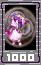| ¿Qué hace? | ¿Cuanto Cuesta? |
|---|---|
| Crea una gran rueda dentada con cuchillas afiladas y lánzala al oponente. | 1000 |
- Elemento: Metal
- Nivel 1: Daño Más Bajo
- Nivel 2: Daño Medio
- Nivel 3: Mayor Daño
- Nivel 4: Daño Más Alto
Señal Tierra Metálica "Ginger Gust"
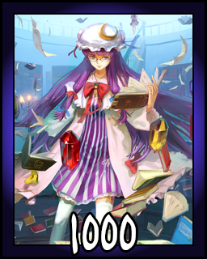| ¿Qué hace? | ¿Cuanto Cuesta? |
|---|---|
| Crea un viento fuerte que empuja al oponente y al mismo tiempo hace Daño Debido a la naturaleza del elemento Viento, el daño puede variar aleatoriamente, y también dependiendo del tamaño y la posición del oponente. |
1000 |
- Elemento: Viento.
- Nivel 1: 16 de daño por golpe.
- Nivel 2: 17 de daño por golpe.
- Nivel 3: 18 de daño por golpe.
- Nivel 4: 19 de daño por golpe.
Señal de Fuego "Akiba Summer"

| ¿Qué hace? | ¿Cuanto Cuesta? |
|---|---|
| Muévase rápidamente en el aire mientras rocía fuego ardiente y agua helada en todas las direcciones. La duración completa de este movimiento cuenta como graze, por lo que no debe preocuparse de que los proyectiles lo dañen. El movimiento no puede ser interrumpido por ataques después de que comenzó. Debido al uso de elementos opuestos, el daño varía mucho, por lo que este movimiento es algo impredecible. Como los elementos se equilibran entre sí, el movimiento no genera ni se ve afectado por la carga. |
2000 |
- Elementos: Fuego y Agua.
- Nivel 1: Daño Más Bajo
- Nivel 2: Daño Medio
- Nivel 3: Mayor Daño
- Nivel 4: Daño Más Alto
Señal de la Madera Lunar "Satellite Fireworks"
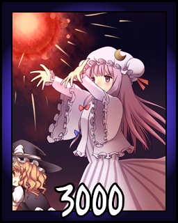| ¿Qué hace? | ¿Cuanto Cuesta? |
|---|---|
| Bombardea un área enorme con proyectiles explosivos. Hace un excelente daño protegido y es completamente ininterrumpible. Se puede hacer graze, pero dura demasiado, por lo que solo se puede evitar parte del daño. |
3000 |
- Elementos: Todos.
- Nivel 1: Daño Elevado, 1,5 de daño por proyectil protegido.
- Nivel 2: Mayor Daño, 2 daños por proyectil protegido.
- Nivel 3: Daño Aún Mayor, 2,5 daños por proyectil protegido.
- Nivel 4: Daño Más Alto, 3 daños por proyectil protegido.
Señal Acuática "Jellyfish Princess"
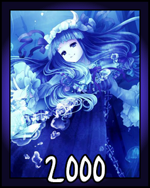| ¿Qué hace? | ¿Cuanto Cuesta? |
|---|---|
| La carta de hechizos más fuerte de Reimu que no requiere preparación especial para usar. Proporciona invencibilidad total y el daño es bastante alto, sin embargo, es bastante costoso de usar. |
2000 |
- Elemento: Agua.
- Nivel 1: Evita 250 de daño y permite volar.
- Nivel 2: Previene 275 de daño y permite volar. La burbuja se multiplica aleatoriamente en proyectiles de burbujas.
- Nivel 3: Evita 300 de daño y permite volar. La burbuja se multiplica aleatoriamente en proyectiles de burbujas con una mejor oportunidad y lo hace automáticamente cuando es atacada.
- Nivel 4: Previene 325 de daño y permite volar. Igual que el anterior, además de que las burbujas se convierten en pilares de agua cuando golpean el suelo y no se eliminan al hacer graze.
Señal Demoniaca "Librarian Devil"
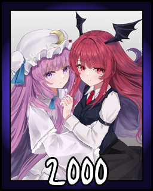| ¿Qué hace? | ¿Cuanto Cuesta? |
|---|---|
| Invoca a tu familiar, Koakuma. Ella ataca a cualquier oponente que se le acerque con un libro. No puede ser golpeada por ataques normales (NA, NP o NT). |
2000 |
- Nivel 1: PS y Daños Más Bajos
- Nivel 2: Más PS y Daño
- Nivel 3: Aún Más PS y Daño
- Nivel 4: PS Máximo y Daño
"Pilas de Rocas"
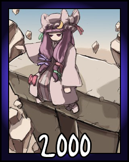| ¿Qué hace? | ¿Cuanto Cuesta? |
|---|---|
| Abre un portal a una zona de asteroides. | 2000 |
- Elementos: Tierra.
- Nivel 1: Daño Medio
- Nivel 2: Más Daño. Pasivo: Los asteroides vienen del aire al azar.
- Nivel 3: Más Daño. Pasivo: Los asteroides vienen del aire con más frecuencia.
- Nivel 4: Mayor Daño. Pasivo: Los asteroides vienen del aire con más frecuencia.
Señal de la Madera Lunar "Satellite Himawari"
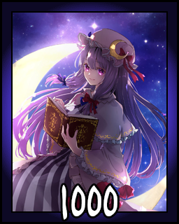| ¿Qué hace? | ¿Cuanto Cuesta? |
|---|---|
| Una versión más débil de Satellite Fireworks crea menos proyectiles, más débiles y que no explotan. La ventaja es que este hechizo, una vez iniciado, continúa atacando mientras eres libre de hacer cualquier otra cosa. |
1000 |
- Elementos: Lunar y Bosque.
- Nivel 1: Mínimo daño, área y duración.
- Nivel 2: +25% de daño por golpe, +0,75 segundos de duración, área ligeramente más amplia y frecuencia de proyectil.
- Nivel 3: +50% de daño por golpe, +1,5 segundos de duración, área ligeramente más amplia y frecuencia de proyectil.
- Nivel 4: +75% de daño por golpe, +2,25 segundos de duración, área ligeramente más amplia y frecuencia de proyectil.
Señal Lunar "Lunar Blaster"
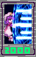| ¿Qué hace? | ¿Cuanto Cuesta? |
|---|---|
| Dispara energía lunar concentrada al oponente. Existe la posibilidad de que aparezca una gran explosión adicional que contenga la energía de la Luna Llena. El Full Moon Beam no se ve afectado por la carga, pero el resto del ataque sí. |
2000 |
- Elemento: Lunar.
- Nivel 1: Probabilidad de rayo de Luna Llena es 15%.
- Nivel 2: La probabilidad de que el rayo de luna llena sea del 33%.
- Nivel 3: La probabilidad de que el rayo de Luna Llena sea del 50%.
- Nivel 4: La probabilidad de que el rayo de Luna Llena sea del 70%.
Señal Metálica "Absolute Harvester"
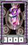| ¿Qué hace? | ¿Cuanto Cuesta? |
|---|---|
| La spell de metal más fuerte, que llama a muchas cuchillas para cortar al oponente en pedazos. Este movimiento no se puede proteger y no se ve afectado por la carga, pero es lento al comenzar y puede interrumpirse. |
3000 |
- Elemento: Metal.
- Nivel 1: Daño Medio
- Nivel 2: Mayor Daño
- Nivel 3: Daño Aún Mayor
- Nivel 4: Daño Extremadamente Alto
Señal Solar "Llamara Solar"
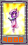| ¿Qué hace? | ¿Cuanto Cuesta? |
|---|---|
| Una versión mejorada de Royal Flare, la spell más fuerte de Patchouli. El efecto de la carga se reduce en esta spell. |
4000 |
- Elemento: Fuego o Solar.
- Nivel 1: 340 de daño. Daño protegido alrededor de 170.
- Nivel 2: 425 de daño. Daño protegido alrededor de 170. Puede matar cuando está protegido.
- Nivel 3: 510 de daño. Daño protegido alrededor de 170. Puede matar cuando está protegido.
- Nivel 4: 595 de daño. Daño protegido alrededor de 170. Puede matar cuando está protegido.
Señal de Tierra Metálica "Emerald Megalopolis"
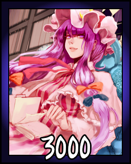| ¿Qué hace? | ¿Cuanto Cuesta? |
|---|---|
| Una versión muy poderosa de Emerald City. Al igual que Emerald City, este hechizo también funciona como contraataque contra ataques de tipo NA, SA, NT y ST, sin embargo, esto también causa una gran cantidad de daño y puede golpear hasta cuatro veces. Los niveles más altos aumentan la nitidez de los cristales, causando daño cuando se protege el ataque. |
4000 |
- Elemento: Tierra
- Nivel 1: Daño Alto
- Nivel 2: Igual que el anterior, y hace daño cuando está protegido.
- Nivel 3: Igual que el anterior, pero el daño protegido se duplica.
- Nivel 4: Igual que el anterior, pero el daño protegido se triplica.
"Anillo de Fuego"
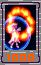| ¿Qué hace? | ¿Cuanto Cuesta? |
|---|---|
| Lanza un anillo de llamas al oponente. Se mueve muy lentamente, por lo que aunque se puede evitar rozándolo, permanecerá por un tiempo para interponerse en el camino de tu oponente. |
1000 |
- Elemento: Fuego
- Nivel 1: 118 de Daño
- Nivel 2: 132 de Daño, 16 de Daño cuando está protegido.
- Nivel 3: 144 de Daño, 32 de Daño cuando está protegido.
- Nivel 4: 157 de Daño, 48 de Daño cuando está protegido.
Señal de Viento "Static Green"
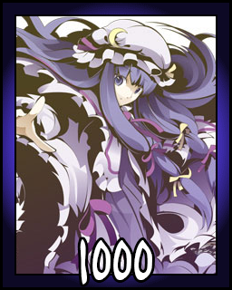| ¿Qué hace? | ¿Cuanto Cuesta? |
|---|---|
| Un ataque que golpea el suelo con una repentina descarga eléctrica. Es inguardable, pero se puede hacer graze. Tenga en cuenta que esta vez es una spell card, no una skill card, a diferencia de 12.3. |
1000 |
- Elemento: Viento
- Nivel 1: 160 de Daño
- Nivel 2: 180 de Daño
- Nivel 3: 200 de Daño
- Nivel 4: 220 de Daño
Señal Elemental "Grand Philospher's Stone"
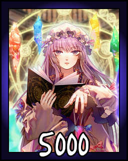| ¿Qué hace? | ¿Cuanto Cuesta? |
|---|---|
| Una spell extremadamente poderoso que combina todos los elementos para una explosión indefendible. No puede hacer tanto daño como Solar Flare, pero es imbloqueable, por lo que siempre golpearás mientras el oponente está en la gran área de ataque. |
5000 |
- Elementos: Todos
- Nivel 1: Daño Alto
- Nivel 2: Mayor Daño
- Nivel 3: Daño Aún Mayor
- Nivel 4: Daño Extremadamente Alto
"Trampa de Viento de Relámpago Superior"
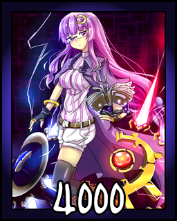| ¿Qué hace? | ¿Cuanto Cuesta? |
|---|---|
| Esta Card es exclusivo de este juego, prepara un circulo de viento que si es atrapado lanzara un rayo hasta restarle vida. | 4000 |